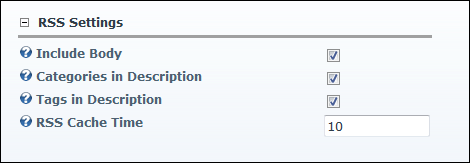

Configuring RSS Settings for Blogs
How to configure RSS (really simply syndication) settings for the Blog module. Note: Syndication must be enabled on individual blogs.
- Select Module Options from the View_Blog module actions menu.
- Go to the RSS Settings section.
- At Show Unique Title, to display the blog title in the Web browser - OR - unmark
 the check box to display the page title.
the check box to display the page title.
- At Include Body, select from these options:
- Mark
 the check box to include the body of blog posts if it requested by the RSS feed.
the check box to include the body of blog posts if it requested by the RSS feed. - Unmark the check box to exclude the body of blog posts regardless of whether they are requested by the RSS feed.
- At Categories in Description, select from these options:
- Mark the check box to include a text underneath the summary of the post with the categories.
- Unmark the check box to disable.
- At Tags in Description, select from these options:
- Mark the check box to include a text underneath the summary of the post with the tags.
- Unmark the check box to disable.
- In the RSS Cache Time text box, enter the number of minutes until cached RSS feeds are refreshed. The default setting is 10.

-
Click the Update button.
-
See "Enabling/Disabling Blog Syndication"